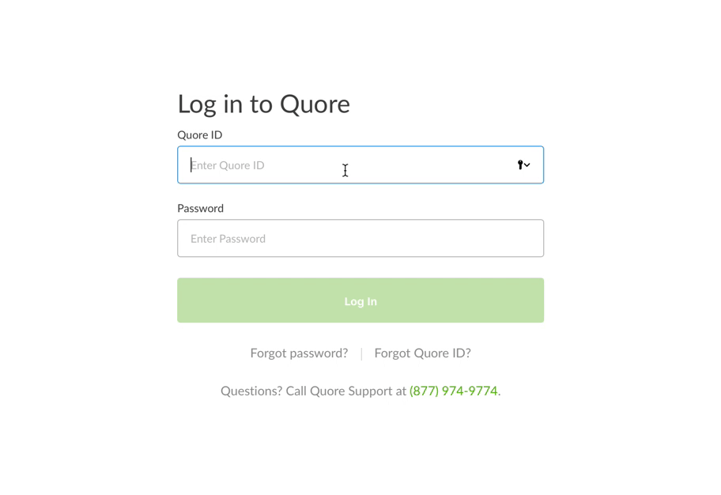

Quore's hotel operations software solves a real problem for a demanding audience. Explaining that software, to prospects, new hires, and customers who weren't marketers or software people themselves, was a harder one.
Quore's platform runs the operational backbone of a hotel, maintenance, inspections, engineering workflows, the kind of software that's easy to underestimate and hard to explain quickly. The people buying it, using it, and being sold it were hotel operators and general managers, not software buyers. Content had to do real translation work before it could do any selling, and it had to work across three audiences at once: prospects evaluating the product, sales teams pitching it live, and customers already depending on it day to day.
The role spanned brand, production, and sales content, but the job underneath all of it was the same: make something complicated legible enough to trust.
Helped shape how Quore looked, sounded, and felt across every touchpoint, working with leadership to translate a technical product into a visual and tonal identity that felt approachable rather than clinical.
Led the creation of Quore's video and multimedia content, from product explainers to customer stories, building a library that supported marketing, onboarding, and internal training simultaneously.
Produced content built specifically for live sales conversations and demos, work that had to hold up under real customer questions, not just look good in a deck.
Worked across sales, customer success, and product teams to make sure content reflected how the product was actually used in the field, not just how it was pitched.
One piece, told in full, backed by two more that show it wasn't a one-time thing.
Kipsu, our integration partner, had no finished marketing assets ready ahead of launch. I took ownership of the whole project start to finish: shaped the creative direction, wrote the script, hired the voice talent, and handled all of the animation and editing myself, built around Quore's brand voice and style throughout. On Kipsu's side, I worked directly with their design, marketing, and sales teams; internally, I coordinated with design, marketing, customer support, development, and sales to land on the right positioning and message for both companies. A pilot customer's general manager later pointed to the integration as a real improvement in departmental accountability, proof the story we told matched what was actually happening on the ground.
// Quore Integration with Kipsu: Guest Requests Directly to Quore
// Customer Spotlight: John Brewster, Chief Engineer, distributed across video, web, and social

// Password reset training, one of about a dozen how-to walkthroughs built for tasks no one wants to read a manual for
Part of a wider library built for the same problem: roughly a dozen how-to and blog explainer animations translating individual product features into short, plain-language pieces for customers who weren't software people.
Trust in B2B content isn't built by listing features. It's built by proving you understand the buyer's day to day well enough to have made this for them, not just about them. That's the standard I've carried into every project since.